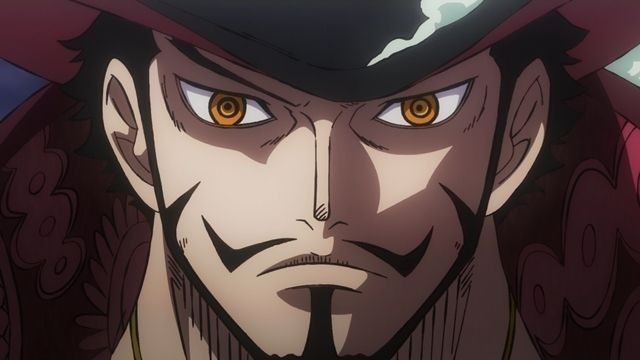
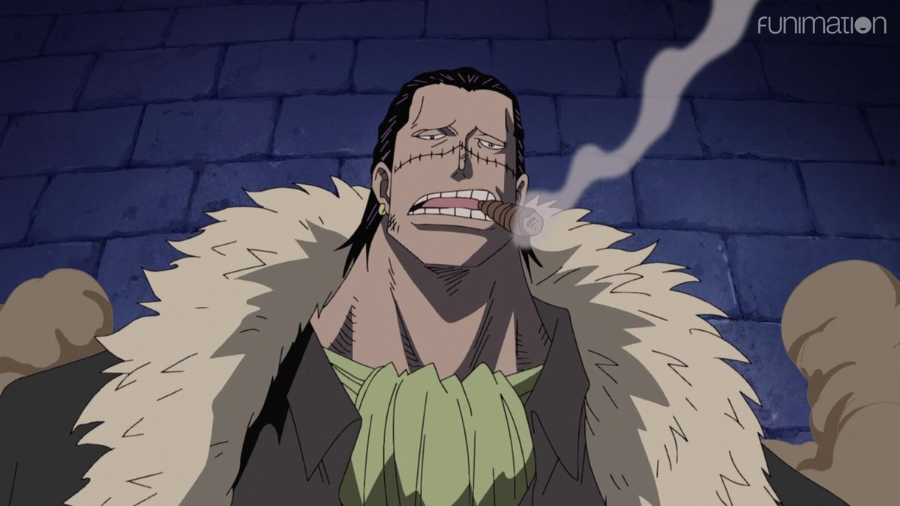
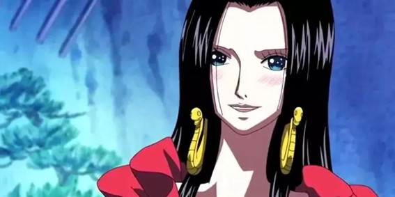
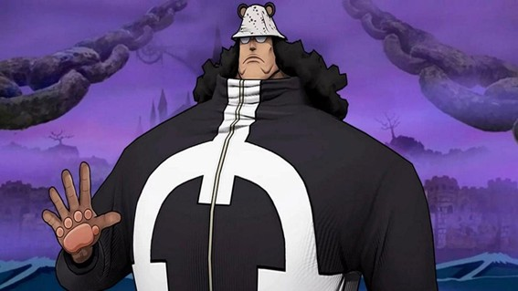
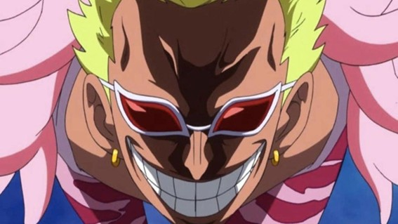
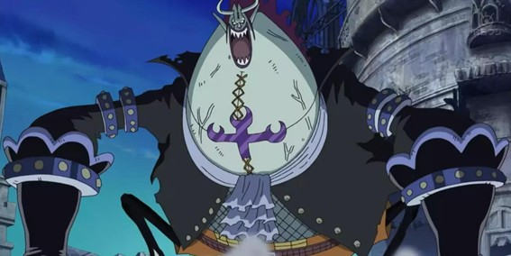

One Piece
Los Shichibukai
Los Shichibukai, o Siete Guerreros del Mar, eran un grupo de piratas extremadamente poderosos aliados temporalmente con el Gobierno Mundial. A cambio de colaborar contra otros piratas, sus crimenes eran parcialmente perdonados y podian actuar con bastante libertad, aunque muchos abusaron de ese privilegio.
Volver a One PieceGuia general
Piratas aliados del Gobierno Mundial
El sistema de los Shichibukai representaba una contradiccion central de One Piece: el Gobierno Mundial necesitaba criminales de altisimo nivel para mantener el equilibrio frente a otros piratas y frente a los Yonkou.
A cambio de trabajar para el Gobierno, sus crimenes eran parcialmente perdonados, podian moverse con cierta libertad y ayudaban como una fuerza intermedia entre la Marina y la pirateria mas salvaje. El problema es que muchos utilizaron ese titulo para fortalecer sus propios planes, territorios y conspiraciones.
- Fueron una de las tres grandes fuerzas de equilibrio del mundo.
- No todos obedecian igual: algunos colaboraban, otros manipulaban el sistema.
- Su abolicion cambio por completo el tablero politico y militar de los mares.
Los Shichibukai originales y mas importantes

Dracule Mihawk
Nivel 7De que va: mejor espadachin del mundo, antiguo rival de Shanks y maestro de Zoro durante el timeskip.
Poder: espadachin monstruosamente fuerte, portador de Yoru y usuario de un haki extremadamente avanzado.

Crocodile
Nivel 6De que va: lider secreto de Baroque Works e impulsor del plan para conquistar Arabasta.
Poder: Logia de arena, absorcion de humedad y tormentas de arena devastadoras.

Boa Hancock
Nivel 6De que va: emperatriz de Amazon Lily y figura clave del sistema, ademas de estar enamorada de Luffy.
Poder: convierte personas en piedra usando la atraccion emocional y combina eso con gran dominio fisico.

Bartholomew Kuma
Nivel 7De que va: cyborg ligado a Vegapunk y uno de los personajes mas tragicos de la serie.
Poder: repele cualquier cosa, desde ataques y personas hasta dolor, fatiga e incluso recuerdos.

Donquixote Doflamingo
Nivel 7De que va: ex Tenryuubito convertido en criminal que gobernaba Dressrosa desde las sombras.
Poder: manipula hilos invisibles y puede controlar personas como si fueran marionetas.

Gecko Moria
Nivel 7De que va: capitan de Thriller Bark y obsesionado con crear un ejercito inmortal.
Poder: controla sombras, roba siluetas vitales y crea zombis.

Jinbe
Nivel 7De que va: hombre pez honorable que luego se une a los Mugiwara.
Poder: maestro del Karate Gyojin y especialmente poderoso en el agua.
Otros Shichibukai importantes
- Marshall D. Teach. Fue Shichibukai durante poco tiempo para infiltrarse en Impel Down y seguir escalando hacia sus propios objetivos.
- Buggy. Se convirtio en Shichibukai por accidente, reputacion exagerada y una cadena de malentendidos que acabo disparando su fama.
- Edward Weevil. Supuesto hijo de Barbablanca y una figura introducida como pieza violenta del antiguo sistema.
- Trafalgar D. Water Law. Consiguio el titulo antes de Dressrosa como parte de su estrategia a largo plazo.
Por que el Gobierno abolio el sistema
El Gobierno Mundial termino aboliendo a los Shichibukai porque ya no podia controlar de verdad a muchos de sus miembros. Las traiciones, conspiraciones y abusos demostraron que el sistema era demasiado inestable incluso para quienes lo habian creado.
- Muchos eran demasiado peligrosos incluso como aliados.
- Se acumularon varias traiciones graves.
- El control politico y militar sobre ellos se habia debilitado demasiado.
Su hueco se empezo a reemplazar parcialmente por los Seraphim y por nuevas armas del Gobierno, una solucion mas artificial y controlable desde la perspectiva del poder oficial.